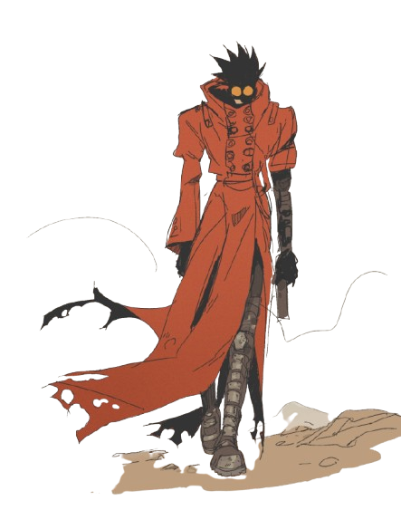
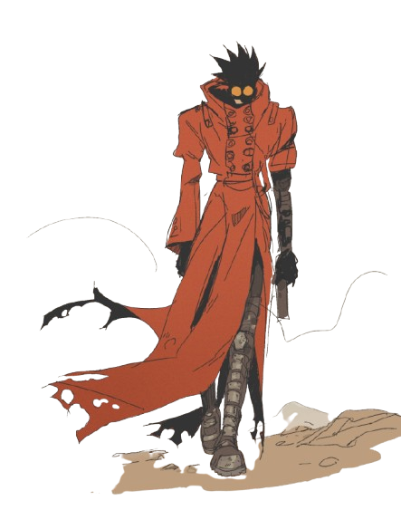

Vash The Stampede
With 60 Billion Double-Dollar Bounty On His Head
Yeah, that’s me, the guy with the 60 billion double-dollar bounty on his head. But hold on, don’t let that fool you! I’m not some heartless monster or a villain looking for trouble—far from it! I’m just a simple man, trying to live by my motto: love and peace! Sure, I might leave behind a little chaos, but it’s never on purpose, I swear! I mean, can’t a guy enjoy his donuts in peace without someone trying to shoot him? Anyway, the whole 'Humanoid Typhoon' thing? Just a big misunderstanding… I’d rather help people than hurt them. So, no matter what you’ve heard, I’m really just a gun-toting goofball on a mission to spread kindness in a world that really needs it!
 
